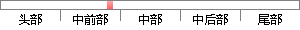

Photoshop不仅拥有多种内置滤镜可供用户选择使用，而且还支持第三方滤镜。
降重后句子
Photoshop不仅有多种内置过滤器供用户选择，还支持第三方过滤器。
片段位置图

相似结果|
相似片段 1：Photoshop不仅可以制作精美的文字造型，而且还可以对文字进行复杂的变换。(3)多姿多彩的滤镜Photoshop不仅拥有多种内置滤镜可供用户选择使用，而且还支持第三方的滤镜。这样，Photoshop就拥有了”取之不尽，用之不竭’的滤镜。
相似片段 2：处理个人照片，Photoshop都已经成为不可或缺的工具。尤其是Photoshop中多姿多彩的滤镜效果，不仅拥有多种内置滤镜可供用户选择使用，而且还支持第三方滤镜——即外挂滤镜，滤镜特效的使用既给人
|
※ 片段修改建议 ※
近似词参考：- 不仅：不但
- 仅有：唯一
- 支持：撑持 支撑
系统自动生成语句：Photoshop不但有多种内置过滤器供用户选择，还撑持第三方过滤器。
注：本片段修改建议为系统自动生成，仅供参考。